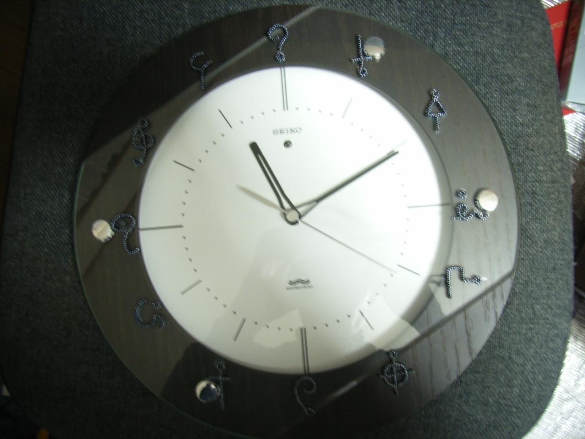
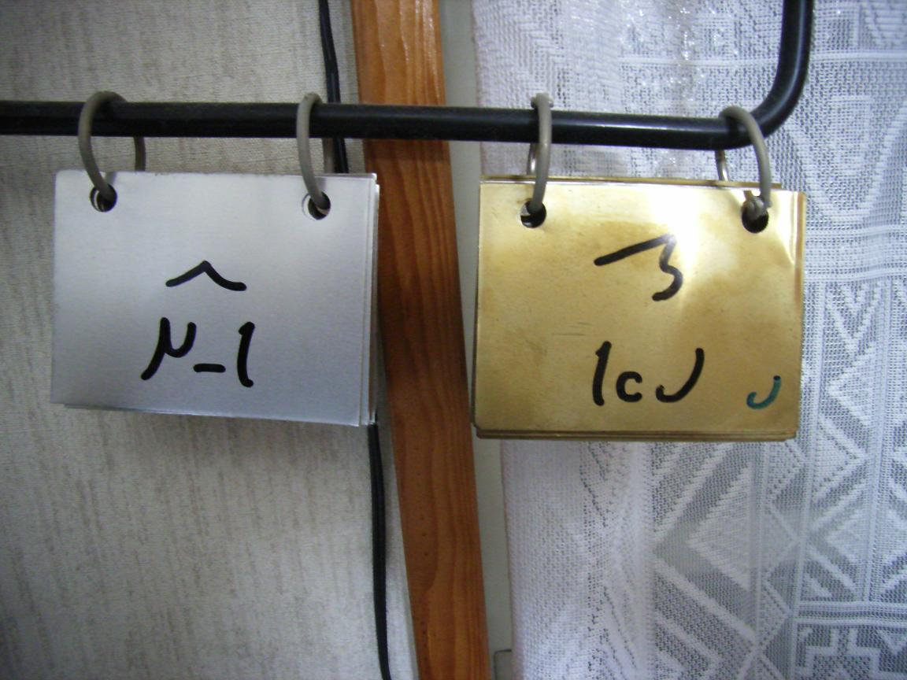

|
ë‹¬ë ¥
�아르미바 시계(2004?)
아르미바ì�˜ 12ì‹ ì�„ 나타내는 ê³ ì•„ë¥´ì¹´ì�˜ 환ì��를 비즈로 엮어 문ì��반으로 ì�´ìš©í•œ 것ì�…니다.

â—�ì�¼ì�¼ ë©œë ¥ ë‹¬ë ¥(2005?)
ì±…ìƒ� ì•�ì—� 걸어 ë‘�었습니다. 넘기는 것ì�„ ì�Šì–´ë²„리면 누구ì�˜ ë‚ ì�¸ì§€ ì•Œ 수 없게 ë�©ë‹ˆë‹¤.
멜시계가 �겨서 �퇴하게 �었습니다.

|